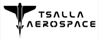
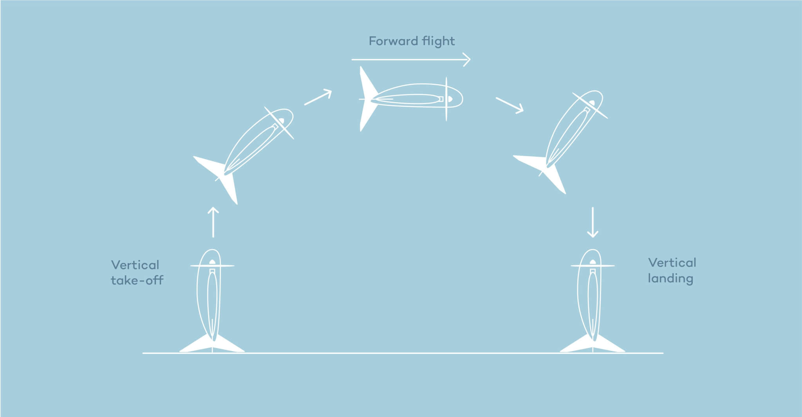
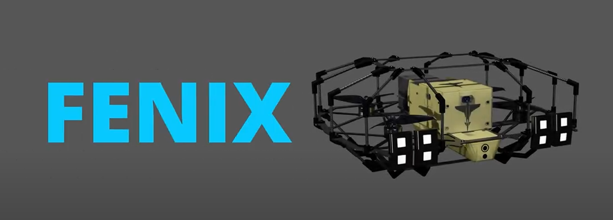
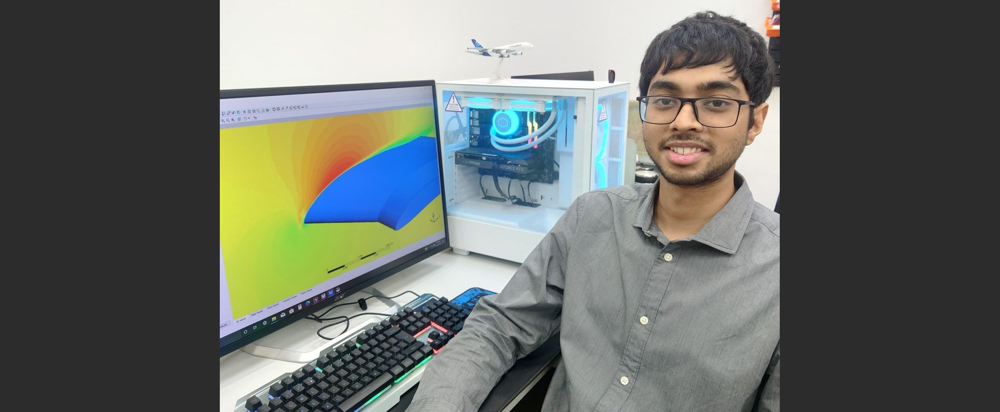

Representative illustration of the Fixed-wing tailsitter UAV from my work

Non-confidential render of a quadcopter UAV I contributed to

Important: Due to my NDA agreement, I have only included publicly available images and non-confidential details in this page.
At Tsalla Aerospace, a defense-focused UAV startup incubated at IISc, I contributed to the design and aerodynamic development of a fixed-wing VTOL UAV and a quadcopter system. I handled tasks from early-stage conceptual design through to prototype fabrication and testing.
Since it was a start-up I had the opportunity to work on both, Design and CFD aspects.
Design and CAD
This is where I learnt everything about product design in detail - from where fillets are necessary and utilization of ribs at appropriate places to getting an intuition for weight saving cutouts and techniques. I developed and refined 3D CAD models using CATIA V5 and SolidWorks.
The most intricate and detailed Product Design and 3D modeling work I did here involved the design of fuselage of a UAV through advanced surfacing, part design and assembly. The design involved compact packaging of electronics such as battery, payload, power distribution boards, cabling and various other electronics. Other tasks include:
- Handled complicated assemblies with 40+ components and developed a strong, systematic approach to Design for Manufacturing and Assembly (DFMA).
- Developed several mechanisms such as battery locking, landing gear detachment, wing detachment, payload lock.
- Produced 4 different concepts from scratch and took them to preliminary design stage in 2 months which involved an innovative design of a cage/protective structure for a quadcopter UAV.
- Performed FEA for components under the guidance of the Structural team using Ansys Structural to ensure the designs satisfied Factor of Safety requirements set.
- Designed multiple laser-cut jigs for UAV assembly during prototyping.
CFD and Aerodynamics
My Fluids, CFD and Aerodynamics work here was for improving/developing a fixed wing tailsitter VTOL UAV.
- Performed complete CFD analysis of aircraft and propeller using transient sliding mesh techniques. This was used for making more accurate calculations of forces on the UAV.
- I implemented mesh independence studies to establish simulation benchmarks and mesh sizing guide which saved about 20% time for a simulation set-up.
- I also regularly performed CFD simulations of different configurations of the UAV and made decisions with the core design team on the planform design for improving aerodynamic efficiency and stability. This was done in conjuction with various design limitations.
- I led and got experience with the wind tunnel test process—from DFM and fabrication to post-processing of the results. Following the wind tunnel tests, I calibrated my CFD simulations by incorporating the appropriate wall roughness factor to align with experimental data. The simulations finally aligned with less than 7% error with the Wind Tunnel results.
- I contributed to the development of an in-house 6DoF aircraft dynamics model in MATLAB alongside two teammates.
The fast-paced and multi-disciplinary nature of the work honed both my design and simulation skills. I came across a lot of design problem statements so often that it not only developed my swiftness and prowess in CAD, it also developed my problem-solving skills for overall design.